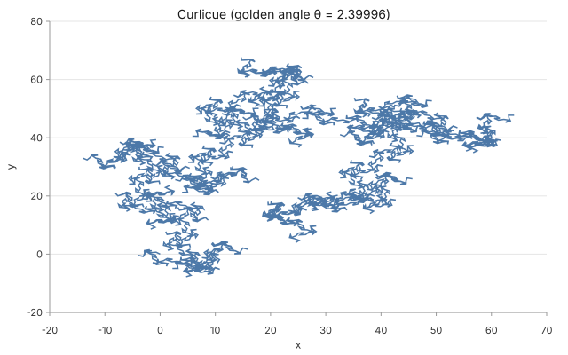
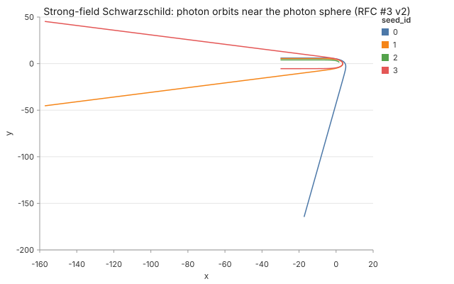
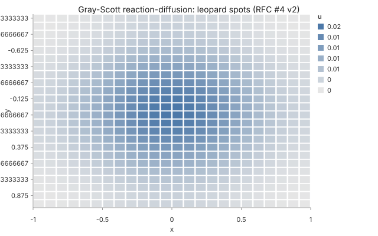
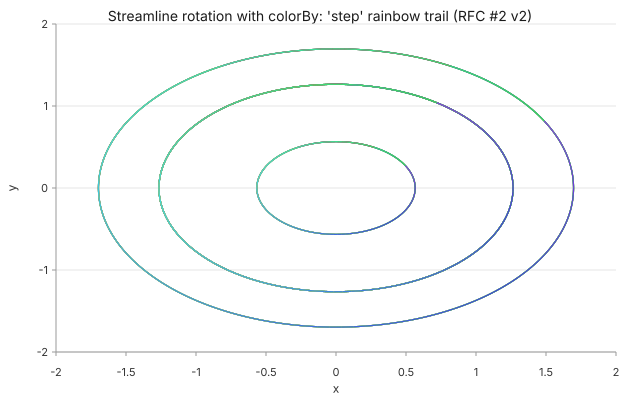

Grammar Catalog
Every visualization on this page is authored in this grammar. Each card below shows the JSON spec on the left and the byte-locked SVG output on the right. The compiler ships these as locked fixtures in CI across Ubuntu / macOS / Windows × Node 20 / 22 — same spec → same SVG, every platform, every run.
data.shape: "trajectory" v0.2
Parametric curves x(t), y(t) and 2D ODE systems. Powers Lissajous, hypotrochoid, butterfly, Archimedean spiral, and the predator-prey + damped-oscillator demos.
// Lissajous figure-eight { "shape": "trajectory", "params": { "a": 3, "b": 2, "d": 0 }, "x": "sin(a*t + d)", "y": "sin(b*t)", "t": { "min": 0, "max": 6.283, "steps": 800 } }

data.shape: "recurrence" v0.3 new
Discrete iteration state_{n+1} = f(state_n, n). Curlicue curves, logistic map, iterated function systems. Schema validates that state, initial, and step keys form the same set; n is reserved as the step index.
// Golden-angle curlicue { "shape": "recurrence", "state": ["x", "y", "theta"], "initial": { "x": 0, "y": 0, "theta": 0 }, "step": { "x": "x + cos(theta)", "y": "y + sin(theta)", "theta": "theta + 2.39996 * n" }, "steps": 8000 }

data.shape: "geodesic" v0.3 new v2
Null geodesics through the equatorial plane of a Schwarzschild black hole. v1 ships the weak-field post-Newtonian acceleration a = −2M·r̂/r² (reproduces Einstein's 4M/b deflection). v2 adds the full strong-field integrator d²r/dλ² = L²(r−3M)/r⁴ in (r, φ, ṙ) — photon-sphere orbits at r = 3M, event-horizon capture at r = 2M.
// Strong-field — photons near the photon sphere { "shape": "geodesic", "metric": "schwarzschild-strong", "mass": 1, "seeds": [ { "x0": -30, "y0": 5.4, "vx0": 1, "vy0": 0 }, { "x0": -30, "y0": 4.0, "vx0": 1, "vy0": 0 } ], "step": 0.05, "max_lambda": 200 }

data.shape: "pde-solve" v0.3 new v2
2D PDE solvers on a structured grid. v1: kind: "heat" via explicit Euler. v2: "wave" via leapfrog (with damping + initial_velocity) and "reaction-diffusion" via Gray-Scott two-species coupling. Per-kind CFL stability checked at schema time.
// Gray-Scott leopard spots { "shape": "pde-solve", "kind": "reaction-diffusion", "domain": { "x": [-1,1], "y": [-1,1] }, "grid": { "rows": 24, "cols": 24 }, "initial_U": "1", "initial_V": "exp(-40*(x*x + y*y))*0.3", "params": { "Du": 1.0, "Dv": 0.5, "F": 0.062, "k": 0.062 }, "boundary": "periodic", "steps": 200, "dt": 0.001 }

mark: "streamline" + colorBy v0.3 new v2
Vector-field integrator emitting bidirectional RK4 flow lines from a grid of seeds. v1: colorBy: "angle" hues each polyline by velocity direction at the seed; "speed" varies lightness by velocity magnitude. v2: colorBy: "step" emits one <path> per polyline segment with a 0°→270° rainbow trail showing arc-length progression.
// Rotation field with rainbow step gradient { "mark": "streamline", "streamline": { "dxdt": "-y", "dydt": "x", "seeds": { "kind": "grid", "rows": 4, "cols": 4 }, "step": 0.05, "maxSteps": 120, "domain": { "x": [-2,2], "y": [-2,2] }, "colorBy": "step" } }
